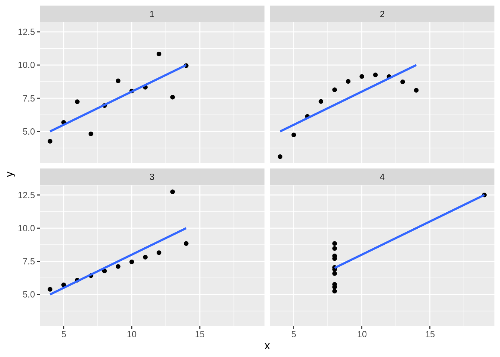

14.7 Video Game Sales Model
Now we’ve created some example models, let’s apply what we’ve learned to our video games dataset.
Let’s model the effect of year and genre on video game sales between 1980 and 2000:
vg_sales_to_model <- tidy_vg_sales %>%
dplyr::filter(Year >= 1980 & Year <= 2000,
Country == "Global") %>%
dplyr::group_by(Genre, Year) %>%
dplyr::summarise(Total_Sales = sum(Sales), .groups = "drop") %>%
dplyr::mutate(Genre = forcats::fct_lump_n(Genre, n = 7, w = Total_Sales)) %>%
dplyr::filter(Genre != "Other") %>%
dplyr::group_by(Genre, Year) %>%
dplyr::summarise(Total_Sales = sum(Total_Sales), .groups = "drop")
vg_sales_to_model %>%
ggplot(aes(x = Year, y = Total_Sales)) +
geom_line() +
facet_wrap(~Genre)
There does seem to be a relationship - we’re seeing more sales as the years increase - but it might not be equal for the different genres. For this reason, let’s create a model that looks at the interaction effects between genre and year:
vg_model <- lm(data = vg_sales_to_model, formula = Total_Sales ~ Year * Genre)Let’s plot a model for each genre model using {ggplot2}:
vg_sales_to_model %>%
ggplot(aes(x = Year, y = Total_Sales, colour = Genre)) +
geom_point() +
# This will produce the same model as we did with the `lm()` model
geom_smooth(formula = y ~ x, method = "lm") +
scale_y_continuous(limits = c(0, NA)) +
facet_wrap(~Genre)
From our plot, it looks as though we’re only seeing a different effect of year in a couple of the genres - the role-playing genre seems to have grown at a faster rate than the others, with shooters growing at a slower rate. Let’s compare this to our model summary:
summary(vg_model)##
## Call:
## lm(formula = Total_Sales ~ Year * Genre, data = vg_sales_to_model)
##
## Residuals:
## Min 1Q Median 3Q Max
## -14.139 -5.391 -1.586 5.334 30.230
##
## Coefficients:
## Estimate Std. Error t value Pr(>|t|)
## (Intercept) -2.476e+03 6.403e+02 -3.867 0.000186 ***
## Year 1.249e+00 3.217e-01 3.883 0.000175 ***
## GenreFighting 1.700e+02 1.084e+03 0.157 0.875656
## GenrePlatform 8.928e+02 9.407e+02 0.949 0.344602
## GenreRacing -6.248e+02 9.957e+02 -0.627 0.531648
## GenreRole-Playing -3.077e+03 1.241e+03 -2.479 0.014680 *
## GenreShooter 2.191e+03 9.055e+02 2.419 0.017162 *
## GenreSports -8.449e+02 9.055e+02 -0.933 0.352778
## Year:GenreFighting -8.664e-02 5.443e-01 -0.159 0.873805
## Year:GenrePlatform -4.455e-01 4.727e-01 -0.943 0.347919
## Year:GenreRacing 3.130e-01 5.001e-01 0.626 0.532647
## Year:GenreRole-Playing 1.544e+00 6.231e-01 2.478 0.014693 *
## Year:GenreShooter -1.103e+00 4.550e-01 -2.424 0.016969 *
## Year:GenreSports 4.245e-01 4.550e-01 0.933 0.352896
## ---
## Signif. codes: 0 '***' 0.001 '**' 0.01 '*' 0.05 '.' 0.1 ' ' 1
##
## Residual standard error: 8.928 on 112 degrees of freedom
## Multiple R-squared: 0.5087, Adjusted R-squared: 0.4517
## F-statistic: 8.922 on 13 and 112 DF, p-value: 2.696e-12This seems to support what we estimated from the plots - there’s definitely a positive effect of year (we’re selling more games as the years go by), and we can see that this effect is different for the Role-Playing and Shooter groups. If we look at the estimate values, we can see that the Shooter genre has a negative value and the Role-Playing genre is positive. This also backs up what we estimated from the plots - the popularity of shooter games has grown more slowly than role-playing games.
It’s worth noting that when you use a character or factor variable like we have here (Genre), the first level of that variable is used as the base for the model. So we can see that there’s no GenreAction entry in our summary. This is because R has treated that genre as the base (i.e the Intercept value) and then compared the effect of the other levels against that base. So when we say that the popularity of shooter game has grown more slowly, this is compare to the base class (the growth of action games).
Before we call it a day however, let’s evaluate our model residuals. If we look at the residuals of the model specifically for the ‘Action’ genre, they don’t look very random:
action_genre_model <- lm(data = vg_sales_to_model %>% dplyr::filter(Genre == "Action"), Total_Sales ~ Year)
vg_sales_to_model %>%
dplyr::filter(Genre == "Action") %>%
modelr::add_residuals(action_genre_model) %>%
ggplot(aes(x = Year, y = resid)) +
geom_point() 
Instead, we’re overestimating closer to the limits of our year range, and underestimating in the middle. This suggests to me that a quadratic model would be more appropriate. Let’s try that:
vg_quad_model <- lm(data = vg_sales_to_model, formula = Total_Sales ~ Year + I(Year^2) + Genre + Genre:Year)
vg_sales_to_model %>%
ggplot(aes(x = Year, y = Total_Sales, colour = Genre)) +
geom_point() +
# This will produce the same model as we did with the `lm()` model
geom_smooth(formula = y ~ x + I(x^2), method = "lm") +
scale_y_continuous(limits = c(0, NA)) +
facet_wrap(~Genre)summary(vg_quad_model)##
## Call:
## lm(formula = Total_Sales ~ Year + I(Year^2) + Genre + Genre:Year,
## data = vg_sales_to_model)
##
## Residuals:
## Min 1Q Median 3Q Max
## -15.4608 -5.0524 -0.6718 3.5095 30.5729
##
## Coefficients:
## Estimate Std. Error t value Pr(>|t|)
## (Intercept) 4.506e+05 9.400e+04 4.794 5.11e-06 ***
## Year -4.541e+02 9.447e+01 -4.807 4.84e-06 ***
## I(Year^2) 1.144e-01 2.374e-02 4.820 4.58e-06 ***
## GenreFighting 3.878e+02 9.913e+02 0.391 0.69637
## GenrePlatform 1.121e+03 8.606e+02 1.303 0.19542
## GenreRacing -3.969e+02 9.108e+02 -0.436 0.66384
## GenreRole-Playing -1.708e+03 1.169e+03 -1.461 0.14688
## GenreShooter 2.190e+03 8.271e+02 2.648 0.00927 **
## GenreSports -8.449e+02 8.271e+02 -1.022 0.30923
## Year:GenreFighting -1.961e-01 4.977e-01 -0.394 0.69428
## Year:GenrePlatform -5.599e-01 4.324e-01 -1.295 0.19802
## Year:GenreRacing 1.986e-01 4.575e-01 0.434 0.66499
## Year:GenreRole-Playing 8.577e-01 5.867e-01 1.462 0.14659
## Year:GenreShooter -1.103e+00 4.156e-01 -2.653 0.00914 **
## Year:GenreSports 4.245e-01 4.156e-01 1.021 0.30935
## ---
## Signif. codes: 0 '***' 0.001 '**' 0.01 '*' 0.05 '.' 0.1 ' ' 1
##
## Residual standard error: 8.155 on 111 degrees of freedom
## Multiple R-squared: 0.5938, Adjusted R-squared: 0.5425
## F-statistic: 11.59 on 14 and 111 DF, p-value: 5.34e-16This seems to have improved things. We now have a higher t value for our Intercept (representing our Action genre), suggesting that we’ve better captured the relationship between the genre and sales with this new model. When we now look at the interactions, we can see that actually only the shooter genre has a significantly different interaction with Year. In other words, there is no difference in the relationship between Year and Sales between the genres other than if the game is shooter.
Let’s check our residuals again to make sure we’re not still predictably over or underestimating:
qd_action_genre_model <- lm(data = vg_sales_to_model %>% dplyr::filter(Genre == "Action"), Total_Sales ~ Year + I(Year^2))
vg_sales_to_model %>%
dplyr::filter(Genre == "Action") %>%
modelr::add_residuals(qd_action_genre_model) %>%
ggplot(aes(x = Year, y = resid)) +
geom_point()
That looks much more random to me!